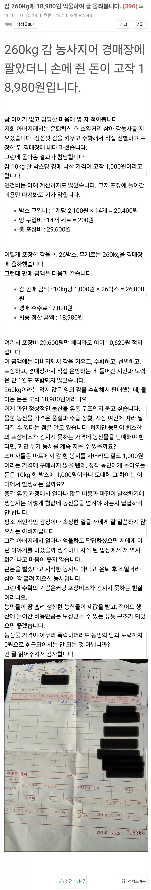

독마새 드디어 나오냐?!
근데 왜 마트만 가면 존나비싸냐고 ㅋㅋㅋ
근데 개인이 직접파는 네이버 스토어도 굳이 싸게팔 이유가 없어서 마트정도로 올려서 팜ㅋㅋ
처음에 10박스?? 부터 좀 이상했음.
내가 감을 안먹어서 그런가보다 했는데 올해가 풍년이어서 더 문제네. 농사로 돈벌기 힘들지.
특히나 저런 수요가 한정된 품목으로 하면.. 사과 수박 복숭아 이런거면 좀 다를수 있을지도
집안에 소일거리로나마 농사하는 사람은 없지만 내가 다 속상하다 ㅅㅂ ㅋㅋㅋ
10kg에 천 원 ?????
시장상황안맞으면 누구던 좆될수있는건데 농민이라고 따로 챙겨줘야할 이유있음?
있긴하지…?
농산물을 100% 시장논리에 맡기는 나라가 몇개나 있나?
식량자급문제면 이해가는데.. 그래서 전업농부들 쌀농사만 짓는다고본듯
앞에있는 명제가 절대적이라 다른 이야기가 힘을 잃는 느낌이긴하지, 그만큼중요한거기도 하고
식자재도 그논리가 맞나?
제조업 농업은 사실 안보적인 측면이 있어. 당장 코로나때 미국 유럽이 기술이 없어서 마스크를 못만들었겠어. 공장을 다 없앴으니까 중요한 순간에 좆된거지.
농업이 돈이 된다고 정부에서 지원하겠어. 국제사정에 따라 우리 밥줄을 타국이 쥐고있는 상황 자체가 문제니까 최소한이나마 농업을 유지할라고 하는거지.
너무 하나만 알고 둘은 생각 안하는듯
그치. 최저시급 제도도 없어져서 개붕이 손가락 빨아야지
감을 떠나서 아무리 좆망 작물이라도 10kg에 천원이라는게 가능함?? 진짜 암도 안사주나 ;;
한달전에 샤인머스켓 한송이 천원 사먹음 내가본 과일 감 포도는 올해 풍년이였나봄 ㅠ
고추 한박스 마르기전 14.5키로 3천원에 팔아봄 ㅋㅋ
ㅁㅊ ㅠㅠㅠ 눈물 나겟네
우리집도 공판장에 건고추 곶감 내는데 솔직히 품질따라 제값 받는다 봐야됨.. 그 날 경매 들어온거에 따라 상대적이긴 한데 품질만 괜찮으면 저정도로 낮게 받진 않음
취미로 지으신거면 품질이 파지수준일 수도 있겠지,,
인탑깝지만 농사란게 원래
고점대비 저점이...
올해 감 싸긴하더라
원래 도매가 그정돈데 걍 30박스면 뭐 어디 도매가떨이말고 당근같은데서 팔지 걍 쓰니가 유통구조를 모르는듯
풍년 아니어도 기대하던 소매가에는 훨씬 못미쳣을덧
당근에 농수산물 직접거래 금지임
가만보면 금지물건 존나 많음 ㅋㅋ
우선 감 상태가 궁금하고 소일거리면 그만큼 농약을 재때 했는지도 의문임. 감이 은근히 농약많이 들고 재때 치지 않으면 많은 병충해를 달고 살게 됨. 거기다 1박스에 1000원이면 재대로 된 상태가 아니였다고 봄. 이정도는 그냥 경매장에서 반품 안시키고 처분해 준것에 가까움. 상등급 감이 이 가격 받을리가 없음.
박스당 천원이 말이 되냐하지만 여기 개붕이들 그 물건보면 살 엄두가 안날 물건들이 대부분일거다ㅋㅋㅋ 보통 백원 천원이 최소단가인데 최소단가인 물건들 보면 돈주고 살만한게 별 없더라 부리는 사람들이 많으면 골라내서 판다고 하지만 그것도 다 인건비들어가는 일이라 쉽지않을듯
식자재는 어느 정도 정부에서 지원해줘야하지 않나 안그래도 식품안보다 뭐다 이러는데
농사는 도박맞고 쉬운게 아님 ㅋㅋ
개인이 직접팔때도 ㅈㄴ비싸서 손님들이 굳이 안찾게 만든게 패착이지. 경매값 마트판매값 중간정도에서 팔았어봐 안찾아먹나 농부들 본인 손으로 기회 쳐낸거지
나도 정확히는 모르는데 농사 안짓고 땅 놀리면 뭐 세금나온다고 뭐라도 해야되는데
다들 감농사를 짓는게 이게 관리가 거의 필요없다고 해서 많이 한다고 하드라고
정리하면 가지고있는 땅 세금안낼라고 감농사 짓는 사람들이 존나게 많다고 들었음 그래서 감 가격이 저지랄 나는거라고
나도 들은얘기라 정확한건 모름
농사안지으면 투자로 봐서 땅값 오른비용 팔때 소득으로 잡혀서 고스란히 다내야함.
농사 지어서 경매 등 몇년간 소득이 잡히면 예외가됨
예전에는 그런 땅 관리에는 도라지 심어놓는다 했었는데 요즘에는 감 키우나보네
직접 팔아야지. 농촌에 젊은 사람 하나만 있어도 온라인 스토어 대리로 운영해주면서 다른 사람들 농산물도 팔아주더라
260kg 따고 포장한 품값 생각하면 오히려 빚지고 판 거임
감상태사진이없네 감이 얼마나 좋은지에따라 내가 직접 가서 살수도있는데
저런건 직거래 하면 안되는거야? 무조건 경매로 팔아야하나???
중품 하품은 인터넷 직거래 많이 하긴함.
1.직거래 하는데 병신들이 마트 가격 받으려고함
2.차 타고 농지 까지 직접 가서 구매 해도 몇천원 차이 안나면 걍 마트 가고 말지
3.마트는 품질 이상하다 싶으면 걍 영수증 들고 환불 2분컷 마트직원도 걍 상태 보고 암말 없이 환불 해줌
4.농부와 직거래 했는데 환불 한다고 하면 어떤일이 일어날지 모름
5.마트는 품질 검사라도 하는데 직거래는 마트에 납품 하기도 버리기도 애매한 상품을 파는 경우가 있음
스스로 시장논리에 도태되는 짓 하면서 나중에 또 세금 투입해달라고 정부에 떼쓸까 두렵다
도서정가제 시즌2 보는 느낌이군
근데 곶감은 왜케 비싸진 거냐구요..
물론 인건비 드는건 아는데
한 2,3년전만해도 1키로에 만원 초반대로 못생긴 가정용 곶감으로 나오던게
이젠 500그람에 만원근처야 샹..
유통이 얼마나 해먹는거야 생산자분이 저럴정도면..
특상 상 중 하 뭐 이렇게 구분하는데 특상이랑 상만 상품가치를 인정해주지 중 하 이런건 박스값도 안나올때가 많음.
저건 경매 올리기전에 특상이랑 상을 잘 구분해서 예쁜것만 따로 포장 안한게 문제임. 그냥 때려넣으면 중이나 하로 측정되는데. 농사 하루이틀하는게 아닐진데 그걸 몰랐다?
10kg 천원은 씨벌 수돗물 가격이네
지금 kg에 3,000원~6,000원 하는거보면
유통이 ㅈ박은게 맞다
대봉감 10KG(30~35과) 짜리 23000원 주고 샀는데 억울하시겠네
가정용 이라는 단어 만든 새끼들도 조졌으면
ㅈ같은 품질을 가정용으로 포장해서 파는거 ㅈ같다
근데 감 진짜 풍년이긴해..시골집가보니 나무하나에 주렁주렁열림...
지금 도매상들 물량 다떠안고 뒤지는중인거아님? 처리비용이라 생각해야
저거 따로 팔아야해..
이영도가 감 과수원 했던걸로 기억나는데